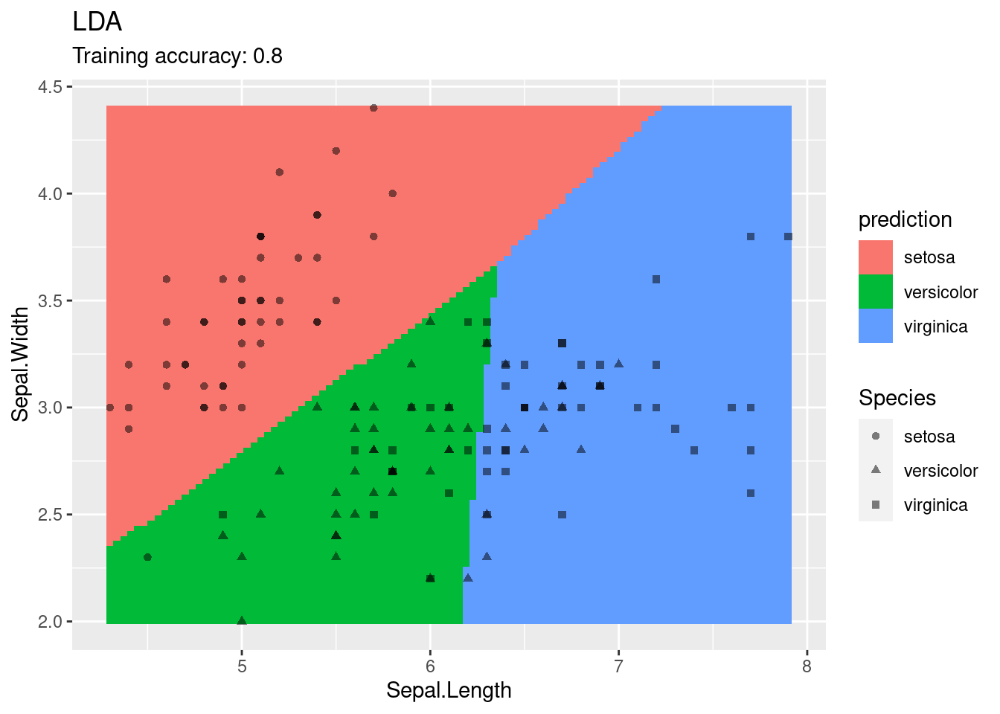
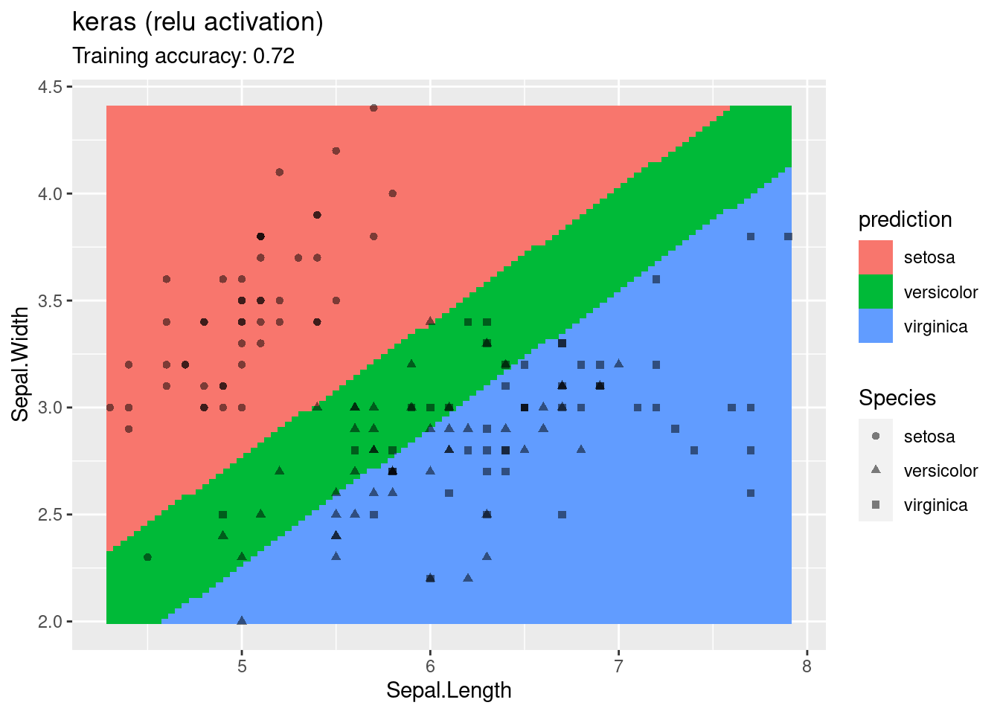
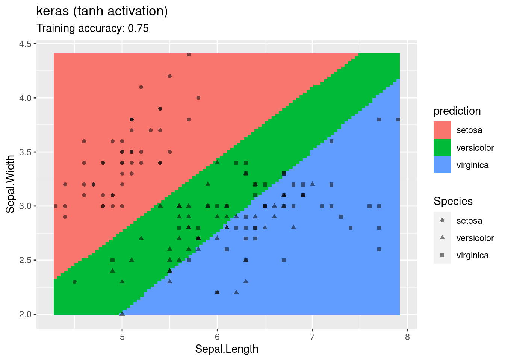
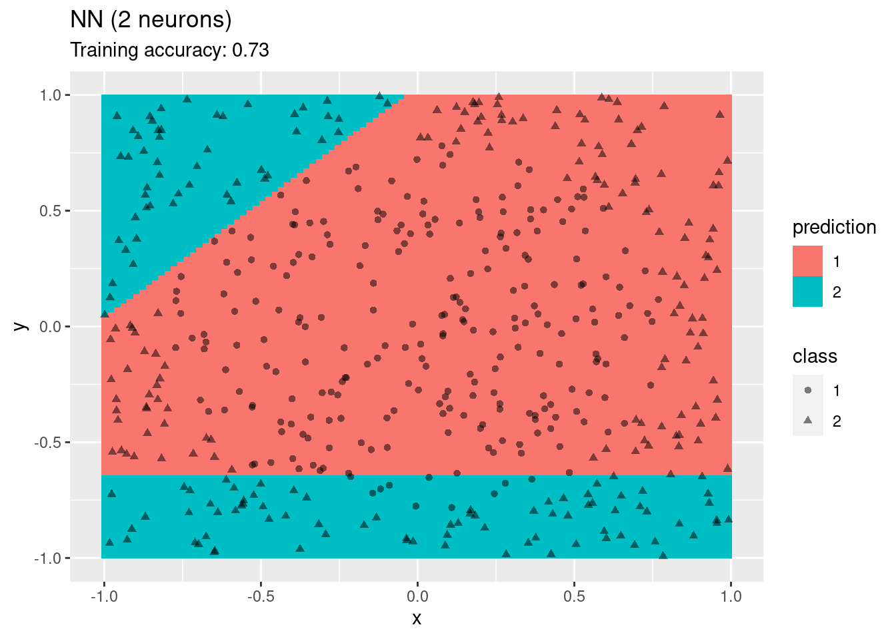
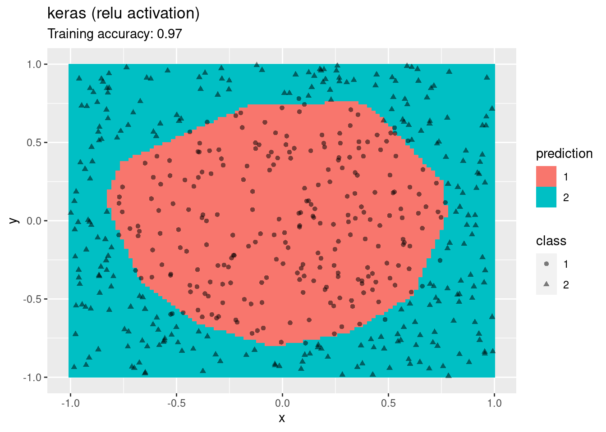
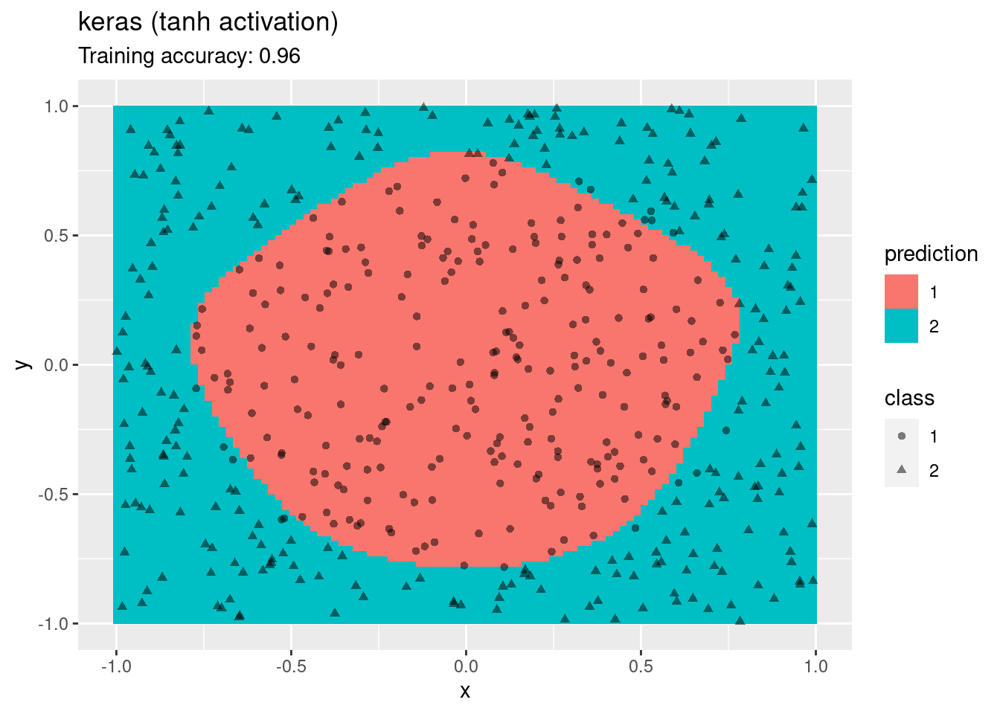

Chapter 4 Classification: Alternative Techniques
Packages used for this chapter: C50 (Kuhn & Quinlan, 2021), caret (Kuhn, 2021), e1071 (Meyer et al., 2021), keras (Allaire & Chollet, 2021), lattice (Sarkar, 2021), MASS (Ripley, 2021a), mlbench (Leisch & Dimitriadou., 2021), nnet (Ripley, 2021b), randomForest (Breiman et al., 2018), rpart (Therneau & Atkinson, 2019), RWeka (Hornik, 2020), scales (Wickham & Seidel, 2020), tidyverse (Wickham, 2021c)
We will use tidyverse to prepare the data.
library(tidyverse)Show fewer digits
options(digits=3)4.1 Training and Test Data
We will use the Zoo dataset which is included in the R package mlbench (you may have to install it).
The Zoo dataset containing 17 (mostly logical) variables on different 101 animals as a
data frame with 17 columns (hair, feathers, eggs, milk, airborne, aquatic, predator, toothed, backbone, breathes, venomous, fins, legs, tail, domestic, catsize, type). We convert the data frame into a tidyverse tibble (optional).
data(Zoo, package="mlbench")
Zoo <- as_tibble(Zoo)
Zoo## # A tibble: 101 x 17
## hair feathers eggs milk airborne aquatic predator
## <lgl> <lgl> <lgl> <lgl> <lgl> <lgl> <lgl>
## 1 TRUE FALSE FALSE TRUE FALSE FALSE TRUE
## 2 TRUE FALSE FALSE TRUE FALSE FALSE FALSE
## 3 FALSE FALSE TRUE FALSE FALSE TRUE TRUE
## 4 TRUE FALSE FALSE TRUE FALSE FALSE TRUE
## 5 TRUE FALSE FALSE TRUE FALSE FALSE TRUE
## 6 TRUE FALSE FALSE TRUE FALSE FALSE FALSE
## 7 TRUE FALSE FALSE TRUE FALSE FALSE FALSE
## 8 FALSE FALSE TRUE FALSE FALSE TRUE FALSE
## 9 FALSE FALSE TRUE FALSE FALSE TRUE TRUE
## 10 TRUE FALSE FALSE TRUE FALSE FALSE FALSE
## # … with 91 more rows, and 10 more variables:
## # toothed <lgl>, backbone <lgl>, breathes <lgl>,
## # venomous <lgl>, fins <lgl>, legs <int>,
## # tail <lgl>, domestic <lgl>, catsize <lgl>,
## # type <fct>We will use the package caret to make preparing training sets and building classification (and regression) models easier. A great cheat sheet can be found here.
library(caret)Use multi-core support for cross-validation. Note: It is commented out because it does not work with rJava used in RWeka below.
##library(doMC, quietly = TRUE)
##registerDoMC(cores = 4)
##getDoParWorkers()Test data is not used in the model building process and needs to be set aside purely for testing the model after it is completely built. Here I use 80% for training.
inTrain <- createDataPartition(y = Zoo$type, p = .8, list = FALSE)
Zoo_train <- Zoo %>% slice(inTrain)
Zoo_test <- Zoo %>% slice(-inTrain)4.2 Fitting Different Classification Models to the Training Data
Create a fixed sampling scheme (10-folds) so we can compare the fitted models later.
train_index <- createFolds(Zoo_train$type, k = 10)The fixed folds are used in train() with the argument
trControl = trainControl(method = "cv", indexOut = train_index)). If you
don’t need fixed folds, then remove indexOut = train_index in the code below.
For help with building models in caret see: ? train
Note: Be careful if you have many NA values in your data. train()
and cross-validation many fail in some cases. If that is the case then you
can remove features (columns) which have many NAs, omit NAs using
na.omit() or use imputation to replace them with reasonable
values (e.g., by the feature mean or via kNN). Highly imbalanced datasets are also problematic since there is a chance that a fold does
not contain examples of each class leading to a hard to understand error message.
4.2.1 Conditional Inference Tree (Decision Tree)
ctreeFit <- Zoo_train %>% train(type ~ .,
method = "ctree",
data = .,
tuneLength = 5,
trControl = trainControl(method = "cv", indexOut = train_index))
ctreeFit## Conditional Inference Tree
##
## 83 samples
## 16 predictors
## 7 classes: 'mammal', 'bird', 'reptile', 'fish', 'amphibian', 'insect', 'mollusc.et.al'
##
## No pre-processing
## Resampling: Cross-Validated (10 fold)
## Summary of sample sizes: 75, 76, 74, 74, 76, 74, ...
## Resampling results across tuning parameters:
##
## mincriterion Accuracy Kappa
## 0.010 0.808 0.747
## 0.255 0.808 0.747
## 0.500 0.808 0.747
## 0.745 0.808 0.747
## 0.990 0.808 0.747
##
## Accuracy was used to select the optimal model
## using the largest value.
## The final value used for the model was mincriterion
## = 0.99.plot(ctreeFit$finalModel)
The final model can be directly used for predict()
predict(ctreeFit, head(Zoo_test))## [1] mammal mollusc.et.al bird
## [4] mammal mollusc.et.al bird
## 7 Levels: mammal bird reptile fish ... mollusc.et.al4.2.2 C 4.5 Decision Tree
library(RWeka)
C45Fit <- Zoo_train %>% train(type ~ .,
method = "J48",
data = .,
tuneLength = 5,
trControl = trainControl(method = "cv", indexOut = train_index))
C45Fit## C4.5-like Trees
##
## 83 samples
## 16 predictors
## 7 classes: 'mammal', 'bird', 'reptile', 'fish', 'amphibian', 'insect', 'mollusc.et.al'
##
## No pre-processing
## Resampling: Cross-Validated (10 fold)
## Summary of sample sizes: 76, 73, 74, 74, 76, 76, ...
## Resampling results across tuning parameters:
##
## C M Accuracy Kappa
## 0.010 1 0.978 0.971
## 0.010 2 0.978 0.971
## 0.010 3 0.978 0.971
## 0.010 4 0.907 0.879
## 0.010 5 0.918 0.893
## 0.133 1 0.978 0.971
## 0.133 2 0.978 0.971
## 0.133 3 0.978 0.971
## 0.133 4 0.907 0.879
## 0.133 5 0.918 0.893
## 0.255 1 0.989 0.985
## 0.255 2 0.989 0.985
## 0.255 3 0.978 0.971
## 0.255 4 0.907 0.879
## 0.255 5 0.918 0.893
## 0.378 1 0.989 0.985
## 0.378 2 0.989 0.985
## 0.378 3 0.978 0.971
## 0.378 4 0.907 0.879
## 0.378 5 0.918 0.893
## 0.500 1 0.989 0.985
## 0.500 2 0.989 0.985
## 0.500 3 0.978 0.971
## 0.500 4 0.907 0.879
## 0.500 5 0.918 0.893
##
## Accuracy was used to select the optimal model
## using the largest value.
## The final values used for the model were C = 0.255
## and M = 1.C45Fit$finalModel## J48 pruned tree
## ------------------
##
## feathersTRUE <= 0
## | milkTRUE <= 0
## | | toothedTRUE <= 0
## | | | airborneTRUE <= 0
## | | | | predatorTRUE <= 0
## | | | | | legs <= 2: mollusc.et.al (2.0)
## | | | | | legs > 2: insect (2.0)
## | | | | predatorTRUE > 0: mollusc.et.al (6.0)
## | | | airborneTRUE > 0: insect (5.0)
## | | toothedTRUE > 0
## | | | finsTRUE <= 0
## | | | | aquaticTRUE <= 0: reptile (3.0)
## | | | | aquaticTRUE > 0
## | | | | | eggsTRUE <= 0: reptile (1.0)
## | | | | | eggsTRUE > 0: amphibian (4.0)
## | | | finsTRUE > 0: fish (11.0)
## | milkTRUE > 0: mammal (33.0)
## feathersTRUE > 0: bird (16.0)
##
## Number of Leaves : 10
##
## Size of the tree : 194.2.3 K-Nearest Neighbors
Note: kNN uses Euclidean distance, so data should be standardized (scaled) first.
Here legs are measured between 0 and 6 while all other variables are between
0 and 1. Scaling can be directly performed as preprocessing in train using the parameter
preProcess = "scale".
knnFit <- Zoo_train %>% train(type ~ .,
method = "knn",
data = .,
preProcess = "scale",
tuneLength = 5,
tuneGrid=data.frame(k = 1:10),
trControl = trainControl(method = "cv", indexOut = train_index))
knnFit## k-Nearest Neighbors
##
## 83 samples
## 16 predictors
## 7 classes: 'mammal', 'bird', 'reptile', 'fish', 'amphibian', 'insect', 'mollusc.et.al'
##
## Pre-processing: scaled (16)
## Resampling: Cross-Validated (10 fold)
## Summary of sample sizes: 74, 73, 76, 74, 74, 75, ...
## Resampling results across tuning parameters:
##
## k Accuracy Kappa
## 1 1.000 1.000
## 2 0.978 0.971
## 3 0.967 0.957
## 4 0.943 0.926
## 5 0.965 0.954
## 6 0.916 0.891
## 7 0.883 0.850
## 8 0.872 0.835
## 9 0.883 0.848
## 10 0.908 0.881
##
## Accuracy was used to select the optimal model
## using the largest value.
## The final value used for the model was k = 1.knnFit$finalModel## 1-nearest neighbor model
## Training set outcome distribution:
##
## mammal bird reptile
## 33 16 4
## fish amphibian insect
## 11 4 7
## mollusc.et.al
## 84.2.4 PART (Rule-based classifier)
rulesFit <- Zoo_train %>% train(type ~ .,
method = "PART",
data = .,
tuneLength = 5,
trControl = trainControl(method = "cv", indexOut = train_index))
rulesFit## Rule-Based Classifier
##
## 83 samples
## 16 predictors
## 7 classes: 'mammal', 'bird', 'reptile', 'fish', 'amphibian', 'insect', 'mollusc.et.al'
##
## No pre-processing
## Resampling: Cross-Validated (10 fold)
## Summary of sample sizes: 77, 72, 77, 74, 74, 73, ...
## Resampling results across tuning parameters:
##
## threshold pruned Accuracy Kappa
## 0.010 yes 0.965 0.955
## 0.010 no 0.988 0.984
## 0.133 yes 0.965 0.955
## 0.133 no 0.988 0.984
## 0.255 yes 0.965 0.955
## 0.255 no 0.988 0.984
## 0.378 yes 0.965 0.955
## 0.378 no 0.988 0.984
## 0.500 yes 0.965 0.955
## 0.500 no 0.988 0.984
##
## Accuracy was used to select the optimal model
## using the largest value.
## The final values used for the model were threshold
## = 0.5 and pruned = no.rulesFit$finalModel## PART decision list
## ------------------
##
## feathersTRUE <= 0 AND
## milkTRUE > 0: mammal (33.0)
##
## feathersTRUE > 0: bird (16.0)
##
## toothedTRUE <= 0 AND
## airborneTRUE <= 0 AND
## predatorTRUE > 0: mollusc.et.al (6.0)
##
## toothedTRUE <= 0 AND
## legs > 2: insect (7.0)
##
## finsTRUE > 0: fish (11.0)
##
## toothedTRUE > 0 AND
## aquaticTRUE <= 0: reptile (3.0)
##
## aquaticTRUE > 0 AND
## venomousTRUE <= 0: amphibian (3.0)
##
## aquaticTRUE <= 0: mollusc.et.al (2.0)
##
## : reptile (2.0/1.0)
##
## Number of Rules : 94.2.5 Linear Support Vector Machines
svmFit <- Zoo_train %>% train(type ~.,
method = "svmLinear",
data = .,
tuneLength = 5,
trControl = trainControl(method = "cv", indexOut = train_index))
svmFit## Support Vector Machines with Linear Kernel
##
## 83 samples
## 16 predictors
## 7 classes: 'mammal', 'bird', 'reptile', 'fish', 'amphibian', 'insect', 'mollusc.et.al'
##
## No pre-processing
## Resampling: Cross-Validated (10 fold)
## Summary of sample sizes: 73, 75, 75, 74, 74, 76, ...
## Resampling results:
##
## Accuracy Kappa
## 1 1
##
## Tuning parameter 'C' was held constant at a value of 1svmFit$finalModel## Support Vector Machine object of class "ksvm"
##
## SV type: C-svc (classification)
## parameter : cost C = 1
##
## Linear (vanilla) kernel function.
##
## Number of Support Vectors : 44
##
## Objective Function Value : -0.143 -0.198 -0.148 -0.175 -0.0945 -0.104 -0.19 -0.0814 -0.154 -0.0917 -0.115 -0.177 -0.568 -0.104 -0.15 -0.119 -0.0478 -0.083 -0.123 -0.148 -0.58
## Training error : 04.2.6 Random Forest
randomForestFit <- Zoo_train %>% train(type ~ .,
method = "rf",
data = .,
tuneLength = 5,
trControl = trainControl(method = "cv", indexOut = train_index))
randomForestFit## Random Forest
##
## 83 samples
## 16 predictors
## 7 classes: 'mammal', 'bird', 'reptile', 'fish', 'amphibian', 'insect', 'mollusc.et.al'
##
## No pre-processing
## Resampling: Cross-Validated (10 fold)
## Summary of sample sizes: 74, 76, 75, 74, 73, 76, ...
## Resampling results across tuning parameters:
##
## mtry Accuracy Kappa
## 2 0.976 0.968
## 5 0.976 0.968
## 9 0.976 0.968
## 12 0.965 0.954
## 16 0.976 0.969
##
## Accuracy was used to select the optimal model
## using the largest value.
## The final value used for the model was mtry = 2.randomForestFit$finalModel##
## Call:
## randomForest(x = x, y = y, mtry = min(param$mtry, ncol(x)))
## Type of random forest: classification
## Number of trees: 500
## No. of variables tried at each split: 2
##
## OOB estimate of error rate: 3.61%
## Confusion matrix:
## mammal bird reptile fish amphibian
## mammal 33 0 0 0 0
## bird 0 16 0 0 0
## reptile 0 0 2 1 1
## fish 0 0 0 11 0
## amphibian 0 0 0 0 4
## insect 0 0 0 0 0
## mollusc.et.al 0 0 0 0 0
## insect mollusc.et.al class.error
## mammal 0 0 0.000
## bird 0 0 0.000
## reptile 0 0 0.500
## fish 0 0 0.000
## amphibian 0 0 0.000
## insect 7 0 0.000
## mollusc.et.al 1 7 0.1254.2.7 Gradient Boosted Decision Trees (xgboost)
xgboostFit <- Zoo_train %>% train(type ~ .,
method = "xgbTree",
data = .,
tuneLength = 5,
trControl = trainControl(method = "cv", indexOut = train_index),
tuneGrid = expand.grid(
nrounds = 20,
max_depth = 3,
colsample_bytree = .6,
eta = 0.1,
gamma=0,
min_child_weight = 1,
subsample = .5
))
xgboostFit## eXtreme Gradient Boosting
##
## 83 samples
## 16 predictors
## 7 classes: 'mammal', 'bird', 'reptile', 'fish', 'amphibian', 'insect', 'mollusc.et.al'
##
## No pre-processing
## Resampling: Cross-Validated (10 fold)
## Summary of sample sizes: 76, 75, 75, 74, 76, 74, ...
## Resampling results:
##
## Accuracy Kappa
## 0.976 0.969
##
## Tuning parameter 'nrounds' was held constant at
## a value of 1
## Tuning parameter 'subsample' was
## held constant at a value of 0.5xgboostFit$finalModel## ##### xgb.Booster
## raw: 83.5 Kb
## call:
## xgboost::xgb.train(params = list(eta = param$eta, max_depth = param$max_depth,
## gamma = param$gamma, colsample_bytree = param$colsample_bytree,
## min_child_weight = param$min_child_weight, subsample = param$subsample),
## data = x, nrounds = param$nrounds, num_class = length(lev),
## objective = "multi:softprob")
## params (as set within xgb.train):
## eta = "0.1", max_depth = "3", gamma = "0", colsample_bytree = "0.6", min_child_weight = "1", subsample = "0.5", num_class = "7", objective = "multi:softprob", validate_parameters = "TRUE"
## xgb.attributes:
## niter
## callbacks:
## cb.print.evaluation(period = print_every_n)
## # of features: 16
## niter: 20
## nfeatures : 16
## xNames : hairTRUE feathersTRUE eggsTRUE milkTRUE airborneTRUE aquaticTRUE predatorTRUE toothedTRUE backboneTRUE breathesTRUE venomousTRUE finsTRUE legs tailTRUE domesticTRUE catsizeTRUE
## problemType : Classification
## tuneValue :
## nrounds max_depth eta gamma colsample_bytree
## 1 20 3 0.1 0 0.6
## min_child_weight subsample
## 1 1 0.5
## obsLevels : mammal bird reptile fish amphibian insect mollusc.et.al
## param :
## list()4.2.8 Artificial Neural Network
nnetFit <- Zoo_train %>% train(type ~ .,
method = "nnet",
data = .,
tuneLength = 5,
trControl = trainControl(method = "cv", indexOut = train_index),
trace = FALSE)
nnetFit## Neural Network
##
## 83 samples
## 16 predictors
## 7 classes: 'mammal', 'bird', 'reptile', 'fish', 'amphibian', 'insect', 'mollusc.et.al'
##
## No pre-processing
## Resampling: Cross-Validated (10 fold)
## Summary of sample sizes: 75, 77, 72, 75, 75, 76, ...
## Resampling results across tuning parameters:
##
## size decay Accuracy Kappa
## 1 0e+00 0.694 0.558
## 1 1e-04 0.807 0.728
## 1 1e-03 0.892 0.852
## 1 1e-02 0.825 0.766
## 1 1e-01 0.727 0.633
## 3 0e+00 0.954 0.939
## 3 1e-04 0.989 0.986
## 3 1e-03 0.989 0.986
## 3 1e-02 0.989 0.986
## 3 1e-01 0.989 0.986
## 5 0e+00 0.939 0.917
## 5 1e-04 0.965 0.954
## 5 1e-03 0.989 0.986
## 5 1e-02 0.989 0.986
## 5 1e-01 0.989 0.986
## 7 0e+00 0.989 0.986
## 7 1e-04 0.989 0.986
## 7 1e-03 0.989 0.986
## 7 1e-02 1.000 1.000
## 7 1e-01 0.989 0.986
## 9 0e+00 0.989 0.986
## 9 1e-04 0.989 0.986
## 9 1e-03 0.989 0.986
## 9 1e-02 0.989 0.986
## 9 1e-01 1.000 1.000
##
## Accuracy was used to select the optimal model
## using the largest value.
## The final values used for the model were size = 7
## and decay = 0.01.nnetFit$finalModel## a 16-7-7 network with 175 weights
## inputs: hairTRUE feathersTRUE eggsTRUE milkTRUE airborneTRUE aquaticTRUE predatorTRUE toothedTRUE backboneTRUE breathesTRUE venomousTRUE finsTRUE legs tailTRUE domesticTRUE catsizeTRUE
## output(s): .outcome
## options were - softmax modelling decay=0.014.3 Comparing Models
Collect the performance metrics from the models trained on the same data.
resamps <- resamples(list(
ctree = ctreeFit,
C45 = C45Fit,
SVM = svmFit,
KNN = knnFit,
rules = rulesFit,
randomForest = randomForestFit,
xgboost = xgboostFit,
NeuralNet = nnetFit
))
resamps##
## Call:
## resamples.default(x = list(ctree = ctreeFit, C45
## = rulesFit, randomForest = randomForestFit, xgboost
## = xgboostFit, NeuralNet = nnetFit))
##
## Models: ctree, C45, SVM, KNN, rules, randomForest, xgboost, NeuralNet
## Number of resamples: 10
## Performance metrics: Accuracy, Kappa
## Time estimates for: everything, final model fitCalculate summary statistics
summary(resamps)##
## Call:
## summary.resamples(object = resamps)
##
## Models: ctree, C45, SVM, KNN, rules, randomForest, xgboost, NeuralNet
## Number of resamples: 10
##
## Accuracy
## Min. 1st Qu. Median Mean 3rd Qu. Max.
## ctree 0.750 0.778 0.778 0.808 0.851 0.889
## C45 0.889 1.000 1.000 0.989 1.000 1.000
## SVM 1.000 1.000 1.000 1.000 1.000 1.000
## KNN 1.000 1.000 1.000 1.000 1.000 1.000
## rules 0.875 1.000 1.000 0.988 1.000 1.000
## randomForest 0.875 1.000 1.000 0.976 1.000 1.000
## xgboost 0.875 1.000 1.000 0.976 1.000 1.000
## NeuralNet 1.000 1.000 1.000 1.000 1.000 1.000
## NA's
## ctree 0
## C45 0
## SVM 0
## KNN 0
## rules 0
## randomForest 0
## xgboost 0
## NeuralNet 0
##
## Kappa
## Min. 1st Qu. Median Mean 3rd Qu. Max.
## ctree 0.673 0.701 0.723 0.747 0.798 0.852
## C45 0.850 1.000 1.000 0.985 1.000 1.000
## SVM 1.000 1.000 1.000 1.000 1.000 1.000
## KNN 1.000 1.000 1.000 1.000 1.000 1.000
## rules 0.837 1.000 1.000 0.984 1.000 1.000
## randomForest 0.833 1.000 1.000 0.968 1.000 1.000
## xgboost 0.833 1.000 1.000 0.969 1.000 1.000
## NeuralNet 1.000 1.000 1.000 1.000 1.000 1.000
## NA's
## ctree 0
## C45 0
## SVM 0
## KNN 0
## rules 0
## randomForest 0
## xgboost 0
## NeuralNet 0library(lattice)
bwplot(resamps, layout = c(3, 1))
Perform inference about differences between models. For each metric, all pair-wise differences are computed and tested to assess if the difference is equal to zero. By default Bonferroni correction for multiple comparison is used. Differences are shown in the upper triangle and p-values are in the lower triangle.
difs <- diff(resamps)
difs##
## Call:
## diff.resamples(x = resamps)
##
## Models: ctree, C45, SVM, KNN, rules, randomForest, xgboost, NeuralNet
## Metrics: Accuracy, Kappa
## Number of differences: 28
## p-value adjustment: bonferronisummary(difs)##
## Call:
## summary.diff.resamples(object = difs)
##
## p-value adjustment: bonferroni
## Upper diagonal: estimates of the difference
## Lower diagonal: p-value for H0: difference = 0
##
## Accuracy
## ctree C45 SVM KNN
## ctree -0.18095 -0.19206 -0.19206
## C45 0.000109 -0.01111 -0.01111
## SVM 3.49e-05 1.000000 0.00000
## KNN 3.49e-05 1.000000 NA
## rules 5.75e-05 1.000000 1.000000 1.000000
## randomForest 0.000126 1.000000 1.000000 1.000000
## xgboost 0.001617 1.000000 1.000000 1.000000
## NeuralNet 3.49e-05 1.000000 NA NA
## rules randomForest xgboost NeuralNet
## ctree -0.17956 -0.16845 -0.16845 -0.19206
## C45 0.00139 0.01250 0.01250 -0.01111
## SVM 0.01250 0.02361 0.02361 0.00000
## KNN 0.01250 0.02361 0.02361 0.00000
## rules 0.01111 0.01111 -0.01250
## randomForest 1.000000 0.00000 -0.02361
## xgboost 1.000000 1.000000 -0.02361
## NeuralNet 1.000000 1.000000 1.000000
##
## Kappa
## ctree C45 SVM KNN
## ctree -0.238389 -0.253389 -0.253389
## C45 6.36e-05 -0.015000 -0.015000
## SVM 2.08e-05 1.00000 0.000000
## KNN 2.08e-05 1.00000 NA
## rules 3.70e-05 1.00000 1.00000 1.00000
## randomForest 7.76e-05 1.00000 1.00000 1.00000
## xgboost 0.00124 1.00000 1.00000 1.00000
## NeuralNet 2.08e-05 1.00000 NA NA
## rules randomForest xgboost
## ctree -0.237063 -0.221723 -0.222437
## C45 0.001327 0.016667 0.015952
## SVM 0.016327 0.031667 0.030952
## KNN 0.016327 0.031667 0.030952
## rules 0.015340 0.014626
## randomForest 1.00000 -0.000714
## xgboost 1.00000 1.00000
## NeuralNet 1.00000 1.00000 1.00000
## NeuralNet
## ctree -0.253389
## C45 -0.015000
## SVM 0.000000
## KNN 0.000000
## rules -0.016327
## randomForest -0.031667
## xgboost -0.030952
## NeuralNetAll perform similarly well except ctree (differences in the first row are negative and the p-values in the first column are <.05 indicating that the null-hypothesis of a difference of 0 can be rejected).
4.4 Applying the Chosen Model to the Test Data
Most models do similarly well on the data. We choose here the random forest model.
pr <- predict(randomForestFit, Zoo_test)
pr## [1] mammal mollusc.et.al bird
## [4] mammal insect bird
## [7] mammal mollusc.et.al mammal
## [10] mammal bird bird
## [13] fish mammal fish
## [16] mammal bird mammal
## 7 Levels: mammal bird reptile fish ... mollusc.et.alCalculate the confusion matrix for the held-out test data.
confusionMatrix(pr, reference = Zoo_test$type)## Confusion Matrix and Statistics
##
## Reference
## Prediction mammal bird reptile fish amphibian
## mammal 8 0 0 0 0
## bird 0 4 1 0 0
## reptile 0 0 0 0 0
## fish 0 0 0 2 0
## amphibian 0 0 0 0 0
## insect 0 0 0 0 0
## mollusc.et.al 0 0 0 0 0
## Reference
## Prediction insect mollusc.et.al
## mammal 0 0
## bird 0 0
## reptile 0 0
## fish 0 0
## amphibian 0 0
## insect 1 0
## mollusc.et.al 0 2
##
## Overall Statistics
##
## Accuracy : 0.944
## 95% CI : (0.727, 0.999)
## No Information Rate : 0.444
## P-Value [Acc > NIR] : 1.08e-05
##
## Kappa : 0.922
##
## Mcnemar's Test P-Value : NA
##
## Statistics by Class:
##
## Class: mammal Class: bird
## Sensitivity 1.000 1.000
## Specificity 1.000 0.929
## Pos Pred Value 1.000 0.800
## Neg Pred Value 1.000 1.000
## Prevalence 0.444 0.222
## Detection Rate 0.444 0.222
## Detection Prevalence 0.444 0.278
## Balanced Accuracy 1.000 0.964
## Class: reptile Class: fish
## Sensitivity 0.0000 1.000
## Specificity 1.0000 1.000
## Pos Pred Value NaN 1.000
## Neg Pred Value 0.9444 1.000
## Prevalence 0.0556 0.111
## Detection Rate 0.0000 0.111
## Detection Prevalence 0.0000 0.111
## Balanced Accuracy 0.5000 1.000
## Class: amphibian Class: insect
## Sensitivity NA 1.0000
## Specificity 1 1.0000
## Pos Pred Value NA 1.0000
## Neg Pred Value NA 1.0000
## Prevalence 0 0.0556
## Detection Rate 0 0.0556
## Detection Prevalence 0 0.0556
## Balanced Accuracy NA 1.0000
## Class: mollusc.et.al
## Sensitivity 1.000
## Specificity 1.000
## Pos Pred Value 1.000
## Neg Pred Value 1.000
## Prevalence 0.111
## Detection Rate 0.111
## Detection Prevalence 0.111
## Balanced Accuracy 1.0004.5 Decision Boundaries
Classifiers create decision boundaries to discriminate between classes. Different classifiers are able to create different shapes of decision boundaries (e.g., some are strictly linear) and thus some classifiers may perform better for certain datasets. This page visualizes the decision boundaries found by several popular classification methods.
The following plot adds the decision boundary by evaluating the classifier at evenly spaced grid points. Note that low resolution (to make evaluation faster) will make the decision boundary look like it has small steps even if it is a (straight) line.
library(scales)##
## Attaching package: 'scales'## The following object is masked from 'package:purrr':
##
## discard## The following object is masked from 'package:readr':
##
## col_factorlibrary(tidyverse)
library(ggplot2)
library(caret)
decisionplot <- function(model, x, cl = NULL, predict_type = "class",
resolution = 100) {
if(!is.null(cl)) {
x_data <- x %>% dplyr::select(-all_of(cl))
cl <- x %>% pull(cl)
} else cl <- 1
k <- length(unique(cl))
# resubstitution accuracy
prediction <- predict(model, x_data, type = predict_type)
if(is.list(prediction)) prediction <- prediction$class
if(is.numeric(prediction))
prediction <- factor(prediction, labels = levels(cl))
else
prediction <- factor(prediction, levels = levels(cl))
cm <- confusionMatrix(data = prediction, reference = cl)
acc <- cm$overall["Accuracy"]
# evaluate model on a grid
r <- sapply(x[, 1:2], range, na.rm = TRUE)
xs <- seq(r[1,1], r[2,1], length.out = resolution)
ys <- seq(r[1,2], r[2,2], length.out = resolution)
g <- cbind(rep(xs, each = resolution), rep(ys, time = resolution))
colnames(g) <- colnames(r)
g <- as_tibble(g)
### guess how to get class labels from predict
### (unfortunately not very consistent between models)
prediction <- predict(model, g, type = predict_type)
if(is.list(prediction)) prediction <- prediction$class
if(is.numeric(prediction))
prediction <- factor(prediction, labels = levels(cl))
else
prediction <- factor(prediction, levels = levels(cl))
g <- g %>% add_column(prediction)
ggplot(g, mapping = aes_string(
x = colnames(g)[1],
y = colnames(g)[2])) +
geom_tile(mapping = aes(fill = prediction)) +
geom_point(data = x, mapping = aes_string(
x = colnames(x)[1],
y = colnames(x)[2],
shape = colnames(x)[3]), alpha = .5) +
labs(subtitle = paste("Training accuracy:", round(acc, 2)))
}4.5.1 Iris Dataset
For easier visualization, we use on two dimensions of the Iris dataset.
set.seed(1000)
data(iris)
iris <- as_tibble(iris)
### Three classes (MASS also has a select function)
x <- iris %>% dplyr::select(Sepal.Length, Sepal.Width, Species)
x## # A tibble: 150 x 3
## Sepal.Length Sepal.Width Species
## <dbl> <dbl> <fct>
## 1 5.1 3.5 setosa
## 2 4.9 3 setosa
## 3 4.7 3.2 setosa
## 4 4.6 3.1 setosa
## 5 5 3.6 setosa
## 6 5.4 3.9 setosa
## 7 4.6 3.4 setosa
## 8 5 3.4 setosa
## 9 4.4 2.9 setosa
## 10 4.9 3.1 setosa
## # … with 140 more rowsggplot(x, aes(x = Sepal.Length, y = Sepal.Width, color = Species)) + geom_point()
Note: There is some overplotting and you could use geom_jitter() instead of geom_point().
4.5.1.1 K-Nearest Neighbors Classifier
library(caret)
model <- x %>% knn3(Species ~ ., data = ., k = 1)
decisionplot(model, x, cl = "Species") + labs(title = "kNN (1 neighbor)")
model <- x %>% knn3(Species ~ ., data = ., k = 10)
decisionplot(model, x, cl = "Species") + labs(title = "kNN (10 neighbor)")
4.5.1.2 Naive Bayes Classifier
library(e1071)
model <- x %>% naiveBayes(Species ~ ., data = .)
decisionplot(model, x, cl = "Species") + labs(title = "Naive Bayes")
4.5.1.3 Linear Discriminant Analysis
library(MASS)##
## Attaching package: 'MASS'## The following object is masked from 'package:dplyr':
##
## selectmodel <- x %>% lda(Species ~ ., data = .)
decisionplot(model, x, cl = "Species") + labs(title = "LDA")
4.5.1.4 Multinomial Logistic Regression (implemented in nnet)
Multinomial logistic regression is an extension of logistic regression to problems with more than two classes.
library(nnet)
model <- x %>% multinom(Species ~., data = .)## # weights: 12 (6 variable)
## initial value 164.791843
## iter 10 value 62.715967
## iter 20 value 59.808291
## iter 30 value 55.445984
## iter 40 value 55.375704
## iter 50 value 55.346472
## iter 60 value 55.301707
## iter 70 value 55.253532
## iter 80 value 55.243230
## iter 90 value 55.230241
## iter 100 value 55.212479
## final value 55.212479
## stopped after 100 iterationsdecisionplot(model, x, cl = "Species") + labs(titel = "Multinomial Logistic Regression")
4.5.1.5 Decision Trees
library("rpart")
model <- x %>% rpart(Species ~ ., data = .)
decisionplot(model, x, cl = "Species") + labs(title = "CART")
model <- x %>% rpart(Species ~ ., data = .,
control = rpart.control(cp = 0.001, minsplit = 1))
decisionplot(model, x, cl = "Species") + labs(title = "CART (overfitting)")
library(C50)
model <- x %>% C5.0(Species ~ ., data = .)
decisionplot(model, x, cl = "Species") + labs(title = "C5.0")
library(randomForest)## randomForest 4.6-14## Type rfNews() to see new features/changes/bug fixes.##
## Attaching package: 'randomForest'## The following object is masked from 'package:dplyr':
##
## combine## The following object is masked from 'package:ggplot2':
##
## marginmodel <- x %>% randomForest(Species ~ ., data = .)
decisionplot(model, x, cl = "Species") + labs(title = "Random Forest")
4.5.1.6 SVM
library(e1071)
model <- x %>% svm(Species ~ ., data = ., kernel = "linear")
decisionplot(model, x, cl = "Species") + labs(title = "SVM (linear kernel)")
model <- x %>% svm(Species ~ ., data = ., kernel = "radial")
decisionplot(model, x, cl = "Species") + labs(title = "SVM (radial kernel)")
model <- x %>% svm(Species ~ ., data = ., kernel = "polynomial")
decisionplot(model, x, cl = "Species") + labs(title = "SVM (polynomial kernel)")
model <- x %>% svm(Species ~ ., data = ., kernel = "sigmoid")
decisionplot(model, x, cl = "Species") + labs(title = "SVM (sigmoid kernel)")
4.5.1.7 Single Layer Feed-forward Neural Networks
library(nnet)
model <-x %>% nnet(Species ~ ., data = ., size = 1, maxit = 1000, trace = FALSE)
decisionplot(model, x, cl = "Species") + labs(title = "NN (1 neuron)")
model <-x %>% nnet(Species ~ ., data = ., size = 2, maxit = 1000, trace = FALSE)
decisionplot(model, x, cl = "Species") + labs(title = "NN (2 neurons)")
model <-x %>% nnet(Species ~ ., data = ., size = 4, maxit = 1000, trace = FALSE)
decisionplot(model, x, cl = "Species") + labs(title = "NN (4 neurons)")
model <-x %>% nnet(Species ~ ., data = ., size = 10, maxit = 1000, trace = FALSE)
decisionplot(model, x, cl = "Species") + labs(title = "NN (10 neurons)")
4.5.1.8 Deep Learning with keras
library(keras)define predict so it works with decision plot
predict.keras.engine.training.Model <- function(object, newdata, ...)
predict_classes(object, as.matrix(newdata))Choices are the activation function, number of layers, number of units per layer and the optimizer. A L2 regularizer is used for the dense layer weights to reduce overfitting. The output is a categorical class value, therefore the output layer uses the softmax activation function, the loss is categorical crossentropy, and the metric is accuracy.
model <- keras_model_sequential() %>%
layer_dense(units = 10, activation = 'relu', input_shape = c(2),
kernel_regularizer=regularizer_l2(l=0.01)) %>%
layer_dense(units = 4, activation = 'softmax') %>%
compile(loss = 'categorical_crossentropy', optimizer = 'adam', metrics = 'accuracy')
history <- model %>% fit(
as.matrix(x[,1:2]),
x %>% pull(3) %>% as.integer %>% to_categorical(),
epochs = 100,
batch_size = 10
)
history##
## Final epoch (plot to see history):
## loss: 0.6389
## accuracy: 0.7267decisionplot(model, x, cl = "Species") + labs(title = "keras (relu activation)")
model <- keras_model_sequential() %>%
layer_dense(units = 10, activation = 'tanh', input_shape = c(2),
kernel_regularizer = regularizer_l2(l = 0.01)) %>%
layer_dense(units = 4, activation = 'softmax') %>%
compile(loss = 'categorical_crossentropy', optimizer = 'adam', metrics = 'accuracy')
history <- model %>% fit(
as.matrix(x[,1:2]),
x %>% pull(3) %>% as.integer %>% to_categorical(),
epochs = 100,
batch_size = 10
)
history##
## Final epoch (plot to see history):
## loss: 0.5659
## accuracy: 0.76decisionplot(model, x, cl = "Species") + labs(title = "keras (tanh activation)")
4.5.2 Circle Dataset
This set is not linearly separable!
set.seed(1000)
library(mlbench)
x <- mlbench.circle(500)
###x <- mlbench.cassini(500)
###x <- mlbench.spirals(500, sd = .1)
###x <- mlbench.smiley(500)
x <- cbind(as.data.frame(x$x), factor(x$classes))
colnames(x) <- c("x", "y", "class")
x <- as_tibble(x)
x## # A tibble: 500 x 3
## x y class
## <dbl> <dbl> <fct>
## 1 -0.344 0.448 1
## 2 0.518 0.915 2
## 3 -0.772 -0.0913 1
## 4 0.382 0.412 1
## 5 0.0328 0.438 1
## 6 -0.865 -0.354 2
## 7 0.477 0.640 2
## 8 0.167 -0.809 2
## 9 -0.568 -0.281 1
## 10 -0.488 0.638 2
## # … with 490 more rowsggplot(x, aes(x = x, y = y, color = class)) + geom_point()
4.5.2.1 K-Nearest Neighbors Classifier
library(caret)
model <- x %>% knn3(class ~ ., data = ., k = 1)
decisionplot(model, x, cl = "class") + labs(title = "kNN (1 neighbor)")
model <- x %>% knn3(class ~ ., data = ., k = 10)
decisionplot(model, x, cl = "class") + labs(title = "kNN (10 neighbor)")
4.5.2.2 Naive Bayes Classifier
library(e1071)
model <- x %>% naiveBayes(class ~ ., data = .)
decisionplot(model, x, cl = "class") + labs(title = "naive Bayes")
4.5.2.3 Linear Discriminant Analysis
library(MASS)
model <- x %>% lda(class ~ ., data = .)
decisionplot(model, x, cl = "class") + labs(title = "LDA")
4.5.2.4 Multinomial Logistic Regression (implemented in nnet)
Multinomial logistic regression is an extension of logistic regression to problems with more than two classes.
library(nnet)
model <- x %>% multinom(class ~., data = .)## # weights: 4 (3 variable)
## initial value 346.573590
## final value 346.308371
## convergeddecisionplot(model, x, cl = "class") + labs(titel = "Multinomial Logistic Regression")
4.5.2.5 Decision Trees
library("rpart")
model <- x %>% rpart(class ~ ., data = .)
decisionplot(model, x, cl = "class") + labs(title = "CART")
model <- x %>% rpart(class ~ ., data = .,
control = rpart.control(cp = 0.001, minsplit = 1))
decisionplot(model, x, cl = "class") + labs(title = "CART (overfitting)")
library(C50)
model <- x %>% C5.0(class ~ ., data = .)
decisionplot(model, x, cl = "class") + labs(title = "C5.0")
library(randomForest)
model <- x %>% randomForest(class ~ ., data = .)
decisionplot(model, x, cl = "class") + labs(title = "Random Forest")
4.5.2.6 SVM
library(e1071)
model <- x %>% svm(class ~ ., data = ., kernel = "linear")
decisionplot(model, x, cl = "class") + labs(title = "SVM (linear kernel)")
model <- x %>% svm(class ~ ., data = ., kernel = "radial")
decisionplot(model, x, cl = "class") + labs(title = "SVM (radial kernel)")
model <- x %>% svm(class ~ ., data = ., kernel = "polynomial")
decisionplot(model, x, cl = "class") + labs(title = "SVM (polynomial kernel)")
model <- x %>% svm(class ~ ., data = ., kernel = "sigmoid")
decisionplot(model, x, cl = "class") + labs(title = "SVM (sigmoid kernel)")
4.5.2.7 Single Layer Feed-forward Neural Networks
library(nnet)
model <-x %>% nnet(class ~ ., data = ., size = 1, maxit = 1000, trace = FALSE)
decisionplot(model, x, cl = "class") + labs(title = "NN (1 neuron)")
model <-x %>% nnet(class ~ ., data = ., size = 2, maxit = 1000, trace = FALSE)
decisionplot(model, x, cl = "class") + labs(title = "NN (2 neurons)")
model <-x %>% nnet(class ~ ., data = ., size = 4, maxit = 1000, trace = FALSE)
decisionplot(model, x, cl = "class") + labs(title = "NN (4 neurons)")
model <-x %>% nnet(class ~ ., data = ., size = 10, maxit = 1000, trace = FALSE)
decisionplot(model, x, cl = "class") + labs(title = "NN (10 neurons)")
4.5.2.8 Deep Learning with keras
library(keras)redefine predict so it works with decision plot
predict.keras.engine.training.Model <- function(object, newdata, ...)
predict_classes(object, as.matrix(newdata))Choices are the activation function, number of layers, number of units per layer and the optimizer. A L2 regularizer is used for the dense layer weights to reduce overfitting. The output is a categorical class value, therefore the output layer uses the softmax activation function, the loss is categorical crossentropy, and the metric is accuracy.
model <- keras_model_sequential() %>%
layer_dense(units = 10, activation = 'relu', input_shape = c(2),
kernel_regularizer=regularizer_l2(l = 0.0001)) %>%
layer_dense(units = 3, activation = 'softmax') %>%
compile(loss = 'categorical_crossentropy', optimizer = 'adam', metrics = 'accuracy')
history <- model %>% fit(
as.matrix(x[,1:2]),
x %>% pull(3) %>% as.integer %>% to_categorical(),
epochs = 100,
batch_size = 10
)
history##
## Final epoch (plot to see history):
## loss: 0.1731
## accuracy: 0.972decisionplot(model, x, cl = "class") + labs(title = "keras (relu activation)")
model <- keras_model_sequential() %>%
layer_dense(units = 10, activation = 'tanh', input_shape = c(2),
kernel_regularizer = regularizer_l2(l = 0.0001)) %>%
layer_dense(units = 3, activation = 'softmax') %>%
compile(loss = 'categorical_crossentropy', optimizer = 'adam', metrics = 'accuracy')
history <- model %>% fit(
as.matrix(x[,1:2]),
x %>% pull(3) %>% as.integer %>% to_categorical(),
epochs = 100,
batch_size = 10
)
history##
## Final epoch (plot to see history):
## loss: 0.3153
## accuracy: 0.966decisionplot(model, x, cl = "class") + labs(title = "keras (tanh activation)")
4.6 More Information
- Example using deep learning with keras.
- Package caret: http://topepo.github.io/caret/index.html
- Tidymodels (machine learning with tidyverse): https://www.tidymodels.org/
- R taskview on machine learning: http://cran.r-project.org/web/views/MachineLearning.html